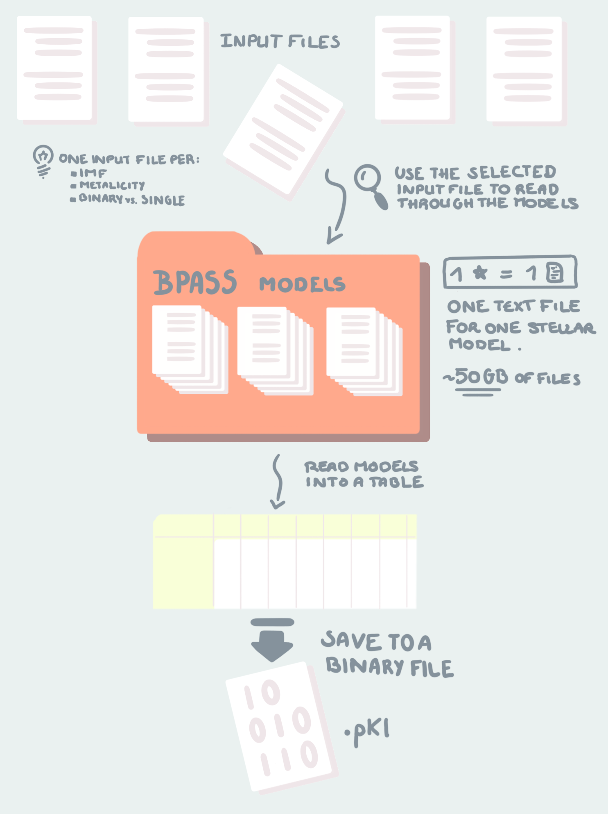

Model Data Compiler¶
Download all the Jupyter notebooks from: https://github.com/HeloiseS/hoki/tree/master/tutorials
Initial Imports¶
[1]:
from hoki.constants import MODELS_PATH, OUTPUTS_PATH, DEFAULT_BPASS_VERSION
from time import time
from hoki.data_compilers import ModelDataCompiler
Introduction¶
The BPASS outputs contain a lot of information that is pretty much ready for analysis and can be quickly loaded through hoki (e.g. HR Diagrams, star counts etc…)
But if you’re looking to match your observation to specific stellar models present in BPASS, say a binary system with primary ZAMS 9 \(M_{\odot}\) and absolute F814w magnitude = X, then you will need to explore the large library of BPASS stellar models to get those evolution tracks.
The best way to go about that is to compile all the relevant data (i.e. the IMFs and metallicities you want, for single or binary models) into one or multiple DataFrames that can then be saved into binary files. Loading data from binary files is much faster and it means you won’t have to compile your data frome text files multiple times. We’ll go over searching through the DataFrames in the notebook called “Model Search”. Here we focus on using the ModelDataCompiler.
The class ModelDataCompiler is pretty much a pipeline: Given the relevant parameters (which we’ll see in a minute), it will locate the BPASS input files, read them, then fetch the BPASS stellar models one by one and combine all of this information in one sin|gle DataFrame. It can then be pickled using pre-existing pandas functionalities.
Here is a visual summary:

Download the Data¶
To run ModelDataCompiler you need two things: - An input file with a name like input_bpass_z020_bin_imf135_300 which is in the bpass output files (folder names like bpass_v2.2.1_imf135_300 - 50 GBs of textfiles containing BPASS stellar model library, paramters etc.. etc… The most recent ones are in bpass-v2.2-newmodels.tar.gz in the Google Drive.
The input files are, in essence, the recipe, and the 50Gb of textfiles are the ingredients. We need to read the input file to know which stars to put in, in what quantity (IMF) and at what time (if there are mergers etc..). That is all done by the pipeline ;)
4 Easy Steps¶
Then, follow the next steps to run your ModelDataCompiler pipeline: - 1) Create a list of desired metallicities - 2) Create a list of desired “dummy” array columns - 3) Ensure the paths to the “model outputs” (which contain the inputs) and to the the BPASS stellar models are correct - 4) Run ModelDataCompiler
Running the pipeline¶
[2]:
# Step 1
# List the metallicities that you want to see in your Data Frame (same format as all BPASS metallicities)
metallicity_list=['z020']
[3]:
# Step 2
# List the columns you want - NEED FULL LIST ONE A WEBPAGE OF READ THE DOCS
cols =['age','M1','f814w']
[4]:
# Step 3
# Use the ModelDataCompiler pipeline
start=time()
myfirstcompiler = ModelDataCompiler(z_list=metallicity_list,
columns=cols,
# Note: The following are defualt parameters written explicitly for the
# pruposes of the tutorial
binary=True, single=False,
models_path=MODELS_PATH, input_files_path=OUTPUTS_PATH,
bpass_version=DEFAULT_BPASS_VERSION, verbose=True)
print(f"This took {round((time()-start)/60,2)} minutes")
*************************************************
******* YOUR DATA IS BEING COMPILED ******
*************************************************
This may take a while ;)
Go get yourself a cup of tea, sit back and relax
I'm working for you boo!
NOTE: The progress bar doesn't move smoothly - it might accelerate or slow down - it'dc perfectly normal :D
|███████████████████████████████████████████████████████████████████████████████████████████████████-| 99.99%
*************************************************
******* JOB DONE! HAPPY SCIENCING! ******
*************************************************
This took 6.3 minutes
models_path, input_files_path, bpass_version¶
models_pathis the ABSOLUTE PATH to the top folder of the BPASS stellar models.input_files_pathis the ABSOLUTE PATH to the folder containing the input files (with names likeinput_bpass_z020_bin_imf135_300) -ModelDataCompilerwill find the right inout files based on the other parameter information your providedbpass_versionis a str that indicates which BPASS version your stellar models are: valid options arev221andv222. Unless you know that you havev222then you’re probably usingv221and you can just use theDEFAULT_BPASS_VERSION(see below).
MODELS_PATH, OUTPUTS_PATH, DEFAULT_BPASS_VERSION¶
All of these are hoki constants (they are in capital letters to make them stand out) - here is what they do and how you can update them if you want:
``MODELS_PATH`` This is the location of the top folder containing the BPASS stellar models (the orange folder in the cartoon above). Mine is set to:
[5]:
MODELS_PATH
[5]:
'/home/fste075/BPASS_hoki_dev/bpass-v2.2-newmodels/'
This location is held in hoki.data.settings.yaml and can be changed by calling:
hoki.constants.set_models_path(path=[absolute path to the models])
Note that if you do this you will have to reload your jupyter notebook for it to work. Alternatively, just set the parameters models_path in ModelDataCompiler to the right path.
``OUTPUTS_PATH``
Same concept but this is the default absolute path to the BPASS outputs, which contain HRDs, stellar numbers, ionizing flux information, etc… including the input files. In my case I haven’t moved the input files outside of the output folder so that’s why I’m using this default.
Mine is set to:
[6]:
OUTPUTS_PATH
[6]:
'/home/fste075/BPASS_hoki_dev/bpass_v2.2.1_imf135_300/'
This location is also held in hoki.data.settings.yaml and can be changed by calling:
hoki.constants.set_outputs_path(path=[absolute path to the outputs])
Note that if you do this you will have to reload your jupyter notebook for it to work.
``DEFAULT_BPASS_VERSION``
This is also found in the settings.yaml file and is (for now) set to v221 by default. Unless you know that you have v222 then don’t touch it. If you do want to change it though, just use hoki.constants.set_default_bpass_version([vXYZ])
Anyway, back to the data…
Accessing the data¶
That’s easy! Just do:
[7]:
myfirstcompiler.data
[7]:
| age | M1 | f814w | filenames | model_imf | types | mixed_imf | mixed_age | initial_BH | initial_P | z | |
|---|---|---|---|---|---|---|---|---|---|---|---|
| 0 | 0.000000e+00 | 65.00000 | -5.621502 | NEWSINMODS/z020/sneplot-z020-65 | 0.0778658 | -1 | 0 | 0 | NaN | NaN | 020 |
| 1 | 1.635020e+03 | 64.99532 | -5.585636 | NEWSINMODS/z020/sneplot-z020-65 | 0.0778658 | -1 | 0 | 0 | NaN | NaN | 020 |
| 2 | 2.163294e+03 | 64.99379 | -5.569154 | NEWSINMODS/z020/sneplot-z020-65 | 0.0778658 | -1 | 0 | 0 | NaN | NaN | 020 |
| 3 | 2.611867e+03 | 64.99247 | -5.552240 | NEWSINMODS/z020/sneplot-z020-65 | 0.0778658 | -1 | 0 | 0 | NaN | NaN | 020 |
| 4 | 3.002335e+03 | 64.99132 | -5.535085 | NEWSINMODS/z020/sneplot-z020-65 | 0.0778658 | -1 | 0 | 0 | NaN | NaN | 020 |
| ... | ... | ... | ... | ... | ... | ... | ... | ... | ... | ... | ... |
| 2674010 | 9.833045e+10 | 0.42280 | 15.582510 | NEWSINMODS/z020/sneplot-z020-0.6 | 43.7266 | 3 | 0 | 0 | NaN | NaN | 020 |
| 2674011 | 9.865972e+10 | 0.42280 | 15.638750 | NEWSINMODS/z020/sneplot-z020-0.6 | 43.7266 | 3 | 0 | 0 | NaN | NaN | 020 |
| 2674012 | 9.899617e+10 | 0.42280 | 15.696310 | NEWSINMODS/z020/sneplot-z020-0.6 | 43.7266 | 3 | 0 | 0 | NaN | NaN | 020 |
| 2674013 | 9.933917e+10 | 0.42280 | 15.755130 | NEWSINMODS/z020/sneplot-z020-0.6 | 43.7266 | 3 | 0 | 0 | NaN | NaN | 020 |
| 2674014 | 9.968715e+10 | 0.42280 | 15.815090 | NEWSINMODS/z020/sneplot-z020-0.6 | 43.7266 | 3 | 0 | 0 | NaN | NaN | 020 |
2674015 rows × 11 columns
[8]:
print(f"This DataFrame weighs {round(sum(myfirstcompiler.data.memory_usage())/1e9,2)} GB")
This DataFrame weighs 0.24 GB
It is a pretty large pandas.DataFrame. If you want all possible columns in the BPASS models it will be about 2.5 GB (100 columns).
You can definitely turn this into an astropy table if you want - personally, I’m goint to keep it that way for now.
Saving your data so you don’t have to do this again¶
Okay now that we have compiled our data we don’t want to have to do it again. I’m going to show you how you can easily turn it into a binary file that you can later load in seconds!
To avoid creating a massive file I’m going to crop it:
[9]:
data=myfirstcompiler.data.iloc[:5]
[10]:
data
[10]:
| age | M1 | f814w | filenames | model_imf | types | mixed_imf | mixed_age | initial_BH | initial_P | z | |
|---|---|---|---|---|---|---|---|---|---|---|---|
| 0 | 0.000 | 65.00000 | -5.621502 | NEWSINMODS/z020/sneplot-z020-65 | 0.0778658 | -1 | 0 | 0 | NaN | NaN | 020 |
| 1 | 1635.020 | 64.99532 | -5.585636 | NEWSINMODS/z020/sneplot-z020-65 | 0.0778658 | -1 | 0 | 0 | NaN | NaN | 020 |
| 2 | 2163.294 | 64.99379 | -5.569154 | NEWSINMODS/z020/sneplot-z020-65 | 0.0778658 | -1 | 0 | 0 | NaN | NaN | 020 |
| 3 | 2611.867 | 64.99247 | -5.552240 | NEWSINMODS/z020/sneplot-z020-65 | 0.0778658 | -1 | 0 | 0 | NaN | NaN | 020 |
| 4 | 3002.335 | 64.99132 | -5.535085 | NEWSINMODS/z020/sneplot-z020-65 | 0.0778658 | -1 | 0 | 0 | NaN | NaN | 020 |
[11]:
data.to_pickle('./data/tuto_data.pkl')
Already Available DataFrames¶
Making the DataFrames takes some time, and in most cases people will be using the same IMF (kroupa 1.325 with a maximum mass = 300 solar masses). So to skip the step of compiling the data I’ve released a data set of pre-compiled DataFrames.
Each table contains 100 columns and corresponds to all the data for one metallicity, either for binary models or for single star models (13 metallicities \(\times\) 2 (binary and single) = 26). Each DataFrame is a maximum of 2.5GB (a lot less for single star models) - but the size quickly goes down when you crop unnecessary data for your particular search (see the “Model Search” tutorial).
The data set has been released on Zenodo and you can get it here
The reason this saves time is that you’ll then have all the data to hand in DataFrames and won’t need to directly search the text files anymore. Even if you need to search a few metallicities, load their DataFrames one after the other (making sure to perform the biggest data cuts before you load too many DataFrames - see the “Model Search” notebook) and combine the matching data in each metallicity in one final table. Even a 2.5GB dataframe in a binary file loads in a couple of seconds.
It takes me over 6 minutes to run ModelDataCompiler on binary models and it will take you longer if you don’t have an SSD. This is a flat fee - even if you only want a small number of columns - that’s because it’s not pandas taking computational time, it’s reading everything from text files, and all of these files need to be opened and read no matter how many columns you pick.
If you need another IMF or really don’t want to have all 100 columns, you’ll need to do it yourself using the method we just went over, but unless you have a very good reason to do that you don’t need to bother.
YOU’RE ALL SET!
I hope you found this tutorial useful. If you encountered any problems, or would like to make a suggestion, feel free to open an issue on hoki GitHub page here or on the hoki_tutorials GitHub there.
[ ]: